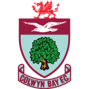
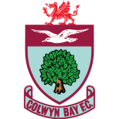
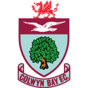
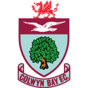
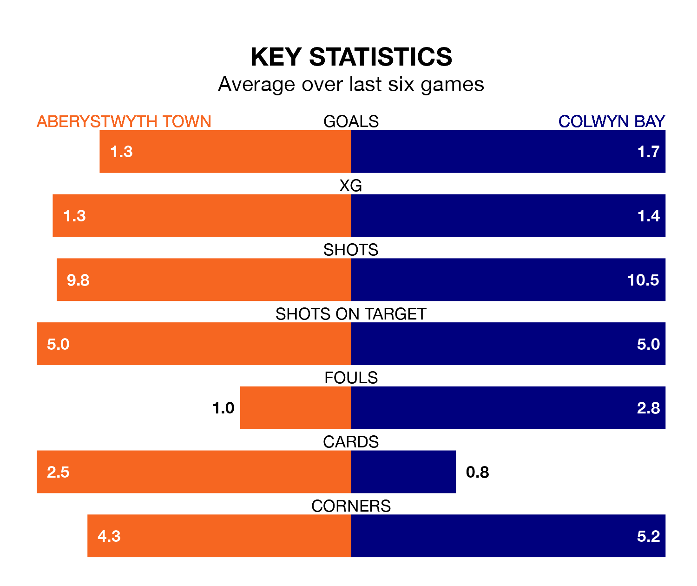

Saturday's late match at Park Avenue sees two relegation candidates play each other, as bottom of the table Aberystwyth Town host 10th-placed Colwyn Bay.
Aberystwyth have picked up 11 points from their first 11 Cymru Premier games, with three wins and two draws.
That is three points less than Colwyn Bay have collected, having won four and drawn two.
With 14 goals in 18 games so far this season, Aberystwyth are the league's second-lowest scorers with 0.8 goals per game. And they are conceding more than average, letting in 39 goals at a rate of 2.2 per game.
Colwyn Bay are also below average scorers, with 1.2 goals per game, compared to a league average of 1.5. They have conceded 2.2 goals per game.
Town are in disappointing form in the Cymru Premier, with two wins and four losses from their last six games.
And also with two wins and four losses over that period, the away team's form is identical – they have both taken six points from 18.
Aberystwyth's last match was on December 2, a 4-2 loss against Cardiff Met, with Alex Darlington and Mark Cadwallader getting the goals for the Seasiders.
Colwyn Bay lost 4-2 against Newtown last time out, also on December 2, with Matthew Hill and Udoyen Akpan on the scoresheet.
